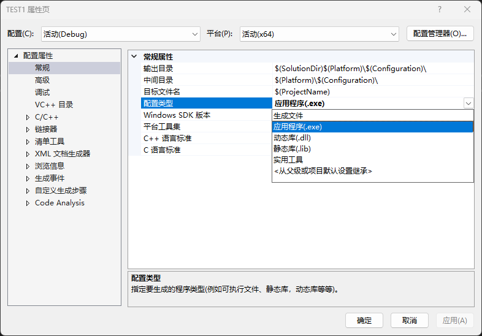
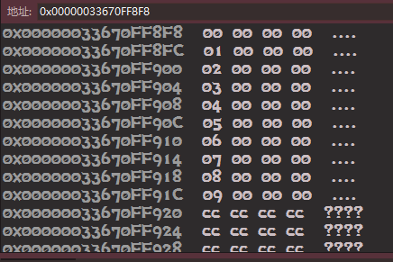
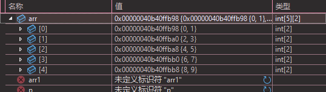

本文章为旧版本 C 语言学习总结，且部分内容不一定 100% 准确。仅供参考
新版本正在写……
写给未来的自己，以免自己忘记
# 基础语法
C 的代码都一定有一个起始入口，它是一个函数，叫做 main。编译器会从 main 函数里开始阅读并编译代码，所以要将代码写在 main 函数体内
1 |
|
# 头文件
C 的部分函数会被打包在一个后缀名为.h 的头文件中，一般 stdio.h 就是标准输入输出头文件，很多我们常用的函数都在这个头文件中被包含
# 输出 Hello World
上面，我们知道要将所有要运行的代码写在 main 函数中，我们也包含了标准输入输出头文件 stdio.h，接着，我们来使用里面的输出流函数 printf () 来输出 Hello World
1 |
|
# printf () 函数
我们来学会使用 printf () 函数：
1 | int printf(const char *format, ...); |
理解不了？也许写成这样更容易理解：
1 | printf("<格式化字符串>", <参量表>); |
格式化字符串常用的有：
- %d 输出十进制数
- %s 输出字符串
- %c 输出字符
- %f 输出小数（单精度浮点数，双精度浮点数）
- %lf 输出小数（单精度浮点数，双精度浮点数）
- %p 输出地址
- %o 以八进制形式输出无符号整数
- %x 输出十六进制数
如何使用呢？假设我们要输出 3.14159，我们应该这样写
1 | printf("%lf",3.14159); |
不过我们一般不这样写，先来看看 C 里面的变量和数据类型吧
# 数据类型
# 变量与数据类型
# 变量
变量，可以被改变的量，如何创建一个变量？
1 | int a; |
这样就可以创建一个变量，可以被更改
# 数据类型
C 语言中一共有如下数据类型
- char 字符数据类型 1bit
- short 短整型 2bit
- int 整形 4bit
- long 长整型 4bit
- long long 更长的整型 8bit
- float 单精度浮点数 4bit
- double 双精度浮点数 8bit
这些数据类型在后面会很常用到。一般来说一开始通常使用 int，因为这是最好理解的一个数据类型
# 常量和宏
不变的量称为常量，一般有 4 种
- 字面常量 如 1，2，3，“s”
- const 修饰的常量 如 const char* ch = ‘f’;
- define 定义的标识符常量 如 #define A 10
- 枚举常量 如 enum 定义的常量
宏是一种常量，即上面说的第三种，使用 #define 定义
1 |
其定义的常量可以在代码中使用，但不可修改
# 字符串
一串由双引号括起来的就被称为字符串，“\0” 这个转义字符表示该字符串的结束，通常隐藏了，但是其实在结尾是有的。
1 | char str = "abcde";//字符串 |
其实在内存中：a b c d e /0
然后我们可以通过 strlen () 函数来求字符串长度。首先要包含它的头文件 < string.h>
1 |
|
# 转义字符
- \’ 用于表示字符常量
- \" 用于表示一个字符串内部的双引号
- \\ 用于表示一个反斜杠，防止它被解释为一个转义序列符
- \a 警告字符，蜂鸣
- \b 退格符
- \n 换行
- \ddd ddd 表示 1-3 个八进制的数字 如：\130 在 ASCII 码表里表示的就是 X
- \xdd dd 表示的是 2 个十六进制数字 如：\x30 在 ASCII 码表里表示的就是 0
# 操作符
# 算术操作符
- + 加法操作符，用于两个数相加
- - 减法操作符，用于两个数相减
- * 乘法操作符，用于两个数相乘
- / 除法操作符，用于两个数相除（注：得到的商不会是小数，即使两边运算的数字是浮点型。只要是整数相除就是整数结果）
- % 取余操作符，用于求两个数的余数
# 常用复合操作符
- = 为赋值操作符，用于将右边的内容赋值给左边
- += 用于将右边数相加到左边
- -= 用于将右边的数相减到左边
- *= 用于将右边的数相乘到左边
- /= 用于将右边的数相除到左边
# 单目操作符
- ! 逻辑反操作，假设条件为真，在前面加！条件就会反过来变为假，反之亦然
- + 正号
- - 负号
- & 取地址，取出右边变量 / 值的内存地址
- * 解引用操作符，间接访问操作符
# 位操作符
- & 按位与，按二进制位，如果相同为 1，不同为 0
- | 按位或，按二进制位，如果有 1，则为 1，没有 1 则为 0
- ^ 按位异或，按对应的二进制位进行异或，相同为 0，相异为 1
注：这些操作符操作的数字必须为整数
# 关系操作符
- > 大于
- >= 大于等于
- < 小于
- <= 小于等于
- != 不等于
- == 等于
# 逻辑操作符
- && 逻辑与， 同时为真才会进入
- || 逻辑或，只要有真就进入
# 条件操作符（三目操作符）
exp1?:exp2?:exp3
exp1 是否满足？满足执行 exp2，不满足执行 exp3
# 逗号表达式
用逗号隔开的多个表达式，从左向右依次执行，结果为最有一个表达式的结果
1 | int a = 10; |
# 下标引用操作符
- [ ] 用于数组下标引用
# 函数调用操作符
- () 用于函数调用
# 结构体成员访问操作符
-
. 结构体名。成员名
-
-> 结构体指针 -> 成员名
# 判断语句
C 语言规定，非 0 为真，0 为假
# if……else if……else……
1 | if ("表达式") |
if……else 语句可以不加 {}，但是这样的话就仅仅会执行第一条语句，如果要执行一整段代码就需要使用 {} 括起来
若有多个 if 和一个 else，该 else 会和最近的 if 匹配
# switch 语句
1 | switch ("整型表达式") |
其中，case 语句是决定入口，break 决定出口。break 语句不是必须的，只要符合你的要求就可以了。由于 switch 中的 case 如果不使用 break 跳出会从上往下依次执行其他 case 中的代码。default 语句为默认语句，即如果都不符合 case 条件的情况下就执行 default 中的语句
# 循环语句
# while 循环
1 | while (条件表达式) |
- 条件表达式 当满足该条件时进入循环
- [可添加参数] break 在 while 循环中，break 用于永久终止循环
- [可添加参数] continue 执行到 continue 语句时，直接跳过后面的代码，重新进行条件判断，进行循环（注：有可能会跳过调整部分，陷入死循环）
请务必要在 while 中添加调整部分，保证每一次循环都逐渐逼近结束条件
# for 循环
for 循环是最常用的循环
1 | for (初始化语句; 判断语句; 调整语句) |
- 初始化语句 用于将一个变量初始化，可以留空
- 判断语句 用来判断是否要进入循环，不满足条件则不会进入循环
- 调整语句 调整条件，用于退出循环
- [可添加参数] break 在 for 循环中，break 用于永久的终止循环
- [可添加参数] continue 跳过后面的代码，直接跳到调整部分
举例（用 for 循环输出 0 到 10）：
1 | int main() |
# do……while 循环
do……while 循环会先执行一次，然后再进行判断
1 | do |
- [可添加参数] break 用于永久的终止循环
- [可添加参数] continue 跳过后面的代码，直接跳到调整部分
# 函数
# 库函数
一系列由 C 编译器提供的库函数，如 printf ()，scanf () 等等
常见函数类型
- IO 函数：printf ();scanf ();getchar ();putchar ()
- 字符串操作函数：strcmp ();strlen ()
- 字符操作函数：toupper ()
- 内存操作函数：memcpy ();memcmp ();memset ()
- 时间 / 日期函数：time ()
- 数学函数：sqrt ();pow ()
- 以及其他库函数
# 自定义函数
1 | ret_type fun_name (para1, *) |
自定义函数是自己定义的，例如：
1 | //模拟实现strcat |
函数的设计讲究高内聚低耦合
- 高内聚 所有的功能都集合在这里自己完善
- 低耦合 和别的函数没有太大关系
同时，尽量少用全局变量；函数参数不宜过多；尽量做到谁申请的资源由谁来释放，避免内存泄露
函数返回类型的地方写 void，表示这个函数不返回任何值，也不需要返回，不需要写 return
1 | //模拟实现memcpy |
函数返回多个值可以用数组，指针，全局变量（不建议）
一个函数如果不写返回类型 默认为 int
通常函数内执行的内容不会影响到外部，若需要，则需要使用指针变量传递参数（数组名本身就是地址）
1 | void bubble_sort(int arr[], int sz) |
如果需要改变变量的值，就需要用到指针变量传递参数
return 只能返回一个值，不能返回多个
实际参数 真实传递给函数的参数 可以为变量 常量 表达式 函数
形式参数 函数名后面括号中的变量 函数调用完成后自动销毁 只在函数内有效
形式参数和实际参数名称可以相同
# 函数的调用
# 传值调用
函数的形参和实参分别占有不同的内存，对形参的修改不会影响实参
也就是说 形参是实参的一份临时拷贝
1 | void fun(int n) |
# 传址调用
把函数外部创建变量的内存地址传递给函数参数的一种调用函数的方式，这种传参方式可以然函数和函数外边的变量建立起真正的联系，也就就说可以字节操作函数外部的变量
1 | void fun(int* n) |
如上代码中，fun 函数会改变传入的 a 的值，将 a 的值变为 8
# 数组传参
实际传递的不是数组本身，仅仅传过去了数组的首元素的地址
# 函数的嵌套调用
函数内部可以调用别的函数，但函数内不能定义另一个函数
# 函数的链式访问
把一个函数的返回值作为另外一个函数的参数
1 | printf("%d "strlen("your")); |
# 函数的声明与定义
编译器会按顺序编译每一行代码，假如如果没找倒这个函数则需要在调用该函数前声明
1 | //函数返回值类型 函数名 （函数参数类型）； |
声明需要函数名，函数参数，返回类型
具体此函数存不存在无所谓。和使用变量一样，一定要先声明后使用。且函数的声明一般放在头文件中
# 模块化函数
通常模块化函数需要另外写一个.h 文件和.c 文件
将函数声明放在.h 文件内
函数实现放在.c 文件内
1 |
|
1 |
|
在 main.c 文件中引用 fun.h（注意，引用自定义的头文件需要使用 “” 而不是 <>），这样在 fun.h 引用的 stdio.h，stdlib.h，string.h 这些库在 main.c 中也可以使用了
# 加密项目（visual studio）
项目名称处 - 属性 - 配置属性 - 常规 - 配置类型 - 静态库 - 确定
# 导入静态库
先导入 lib 文件和.h 文件，然后加入声明：
#pragma comment(lib,“xxx.lib”)
# 函数递归
一个过程或函数在其定义或说明中直接或者间接调用自己的方式叫做递归，也就是函数自己调用自己。递归只需要少量的代码即可完全之前所需要的多次重复计算。在函数自己调用自己的时候，其后面的代码不会执行，而是等函数中的函数执行完之后才会返回来继续执行下面的代码
1 | void Print(unsigned int n) |
该 Print 函数可以输出传入的数字的每一位
# 递归的重要条件
- 存在限制条件
- 每次递归必须越来越接近这个限制条件
这俩是必要条件，如果没有，一定会死循环
# 数组
一种相同类型元素的集合
# 一维数组
数组格式： type_t arr_name [const_n] = {value0, value1,……};
元素类型 数组名称 [大小 / 常量表达式] = {值}；
# 数组的初始化
- 不完全初始化：
int arr[10]={1,2}; - 完全初始化：
int arr[2]={1,2};
1 | int arr[2]={1,2}; |
如上两行代码完全等价。编译器会根据后面存储的内容来确定个数。如果没有元素，默认为 0
接着来看字符数组
1 | char ch[]={'a','b','c'}; //为字符数组 用单引号引起来 |
其中，ch1 实际上在内存中存储是’a’ ‘b’ ‘c’ ‘\0’
# 数组的使用
使用 [] 下标引用操作符来访问 / 更改数组内容。数组的下标是从 0 开始的，也就是说，第一个元素的下标是 0
格式：数组名 [下标]= 值
1 | int arr[10] = {0, 1, 2, 3, 4, 5, 6, 7, 8, 9}; |
这样就将 arr 数组中第 3 个元素（原本为 3）更改为 10 了
1 | int arr[10] = {0, 1, 2, 10, 4, 5, 6, 7, 8, 9}; |
数组名其实是一个地址，是数组首元素的地址
数组在内存中每个元素都是挨着存储的。且随着数组下标的增长，地址是由低到高变化的
# 二维数组
type_t arr_name [const_n][const_n] = {value0, value1,……};
元素类型 数组名称 [行][列] = {值};
# 二维数组的初始化（创建的同时给赋值）
1 | int arr2[2][2] = {1,2,3,4}; |
arr2 为完全初始化，其内容如下
第一行： 1 2
第二行： 3 4
1 | int arr3[2][2]={1,2,3}; |
arr3 为不完全初始化（默认空位补 0，如果是字符数组，默认补充 \0），其内容如下
第一行： 1 2
第二行： 3 0
二维数组行数可以省略，但是列不能省略
# 二维数组的使用
可以将二维数组理解为平面直角坐标系，最左上角为 0，0。二维数组的每行都可以看作一维数组，数组名即为数组名 [行号]
1 | int arr[2][2] = {0, 1, 2, 3}; |
输出为 3
1 | int arr[5][2] = { 0, 1, 2, 3, 4, 5, 6, 7, 8, 9}; |
如上，arr [1] 里的值为
# 二维数组在内存中的存储
每个元素的位置是连续的，一行内部连续，换行也是连续的
二维数组的首元素是第一行
# 数组作为函数参数
1 | void fun_name (arr_name[]); |
数组传参本质上传过去的是首元素的地址，是一个指针
数组名是数组首元素的地址
但是有两个例外
- sizeof (数组名) 数组名表示整个数组 计算整个数组的大小，单位是字节
- & 数组名 数组名表示整个数组 取出的是整个数组的地址
& 数组名 取出的是数组的地址，而数组首元素的地址等于数组起始的地址
以函数函数传参闯劲函数内部的数组是在函数内部是无法计算其的元素个数的
# 指针
每个变量都有一个内存位置，每个内存位置都定义了一个可使用 & 运算符访问的地址，它表示了其变量在内存中的地址（为第一个字节的地址）
指针也就是内存地址，指针变量就是用来存放内存地址的变量
# 指针变量
1 | 数据类型* 变量名 |
* 说明是指针变量
int 是数据类型，表示该指针变量指向的内容是 int 类型
# 解引用操作
通过指针变量的地址改变原本存在的变量
1 | *指针变量 = 值; |
& 变量 这里拿到的是该变量中第一个字节的地址
且指针变量 = 地址变量
# 指针变量的大小
在 32 位计算机上是 4 个字节
在 64 位计算机上是 8 个字节
所有类型的指针变量大小都是 4/8
# 野指针
野指针就是指针指向的位置是未知内存地址的指针
# 指针未初始化
1 | int main() |
# 越界访问
1 | int main() |
在这段代码中，i 会取到 10，但是 * p 的指针会访问到 arr 数组后面，属于越界访问
# 指针指向空间释放
分配给你的指针释放了但是指针地址没变，如果还要访问该地址就会非法访问
1 | int* test() |
# 如何避免野指针
- 指针初始化 当不知道指针应该初始化成什么的时候，就把其初始化为 NULL
- 小心指针越界访问
- 指针指向空间释放后及时置空（NULL）
- 指针使用之前检查其有效性 不要访问空指针，空指针无法访问
- 当知道指针指向哪里的时候，指向一个地址
- 当不知道指针指向哪里的时候，置为空指针
- 当指针空间被释放的时候，也可以置成空指针
- 每次使用指针变量的时候，可以先 if 判断一下看看是不是空指针再进行访问
# 二级指针
1 |
|
# 指针数组
1 | //整型数组 |
存放整型的数组叫做整型数组
存放指针的数组叫做指针数组
# 字符指针
1 | char* s; |
char * 本质上是把字符串的首字符地址存储住了
char * 是常量字符串，若需要不能更改可以在前面加上 const，即 const char*
指针是可以指向一个字符串的，指向的是字符串首元素的地址，且是常量
# 数组指针
数组指针就是一种指向数组的指针
1 | int arr[]={}; |
* 和 parr 结合 表示是数组指针，指针类型是 int
[] 内的常量一定要写，并且只能写原数组的元素个数
# &arr 和 arr
arr 是数组首元素的地址
&arr 才是数组的地址
假设都要 + 1，&arr 会跳过这个数组，而 arr 只会跳过第一个元素个数
# 函数指针
指向函数的指针，即存放函数地址的指针
通过 & 函数名可得到函数的地址，并且函数名也是函数的地址。也就是说，函数名 == & 函数名
函数指针变量
1 | int(*pf) (int, int) = Add; |
在这里 (*pf)==pf==Add=&add，因为函数名就是函数的地址
使用函数指针传参
1 | (*pf)(3,5); |
函数指针 == 函数名
# 函数指针数组
函数指针数组即存放函数指针的数组
1 | int (*pfArr[5])(int, int) = {NULL, Add, Sub, Mul, Div}; |
函数指针数组只能存储相同类型的函数指针
# 指向函数指针数组的指针
即，取出函数指针数组的地址
1 | int(*p)(int, int); //函数指针 |
p3 就是一个指向函数指针数组的指针
# 回调函数
通过函数指针调用的函数，如果你把函数的指针作为参数传递给另外一个函数，当这个指针被用来调用其所指向的函数时，就是回调函数
1 | int Clac(int (*pf)(int, int)) |
# 自定义类型
# 结构体
结构体是一些值的集合，但是值的类型可以不同
1 | struct abc |
其结构为
1 | struct 结构体标签 |
注意！！！结构体大括号结尾后有分号
# 结构体初始化
# 创建一个结构体变量
1 | struct person |
s1 即为结构体对象
# 访问结构体成员变量
有两种方式，一种为直接访问变量中的值，一种为指针方式
直接访问使用。运算符
1 | s1.age; |
指针访问使用 -> 运算符
1 | s1->name; |
# 初始化结构体变量
1 | struct person s1 = {20, "Li"}; |
C 这个设计给我搞混了，C++ 的初始化方便多了。差点写着写着写成 C++
# 匿名结构体
结构体在定义的时候也可以不完全声明，但是只能使用一次，有局限性
1 | struct |
# 结构体的自引用
一个结构体内部可以包含另一个结构体的成员。但不可以包含自己的成员，会导致死递归
1 | struct A |
不过，可以存放自己的结构体指针。表示这个节点可以找到同类型的下一个节点（链表）。这叫做结构体的自引用
1 | struct Node |
# 结构体传参
两种方式，传结构体和传地址
1 | function_name(struct tag s) //传结构体 |
传址调用更好，效率高，能够改变变量的数值。同时，函数传参时，参数是需要压栈的，结构体如果过大会导致系统开销比较大，会导致性能的下降。
# 结构体内存对齐
# 为什么存在内存对齐？
-
平台原因（移植原因）：不是所有的硬件平台都能访问任意地址上的任意数据的；某些硬件平台只能
在某些地址处取某些特定类型的数据，否则抛出硬件异常。
-
性能原因：数据结构（尤其是栈）应该尽可能地在自然边界上对齐。原因在于，为了访问未对齐的
内存，处理器需要作两次内存访问；而对齐的内存访问仅需要一次访问。
总结来说：结构体的内存对齐是拿空间来换取时间的做法
# 结构体是如何进行内存对齐的？
- 第一个成员在与结构体变量偏移量为 0 的地址处
- 其他成员变量要对齐到某个数字（对齐数）的整数倍的地址处。（对齐数 = 编译器默认的一个对齐数与该成员大小的较小值）
- 结构体总大小为最大对齐数（每个成员变量都有一个对齐数）的整数倍。
- 如果嵌套了结构体的情况，嵌套的结构体对齐到自己的最大对齐数的整数倍处，结构体的整体大小就是所有最大对齐数（含嵌套结构体的对齐数）的整数倍。
在 VS 编译器中，结构体的默认对齐数为 8
且 Linux 没有默认对齐数的概念
# 修改默认对齐数
1 |
|
# 位段
位段的声明和结构体是类似的，但是有两个不同：
- 位段的成员类型必须是 int、unsigned int、或 signed int
- 位段的成员名后面有一个冒号和数字
1 | struct A |
- 位段的成员可以是 int、unsigned int、signed int 或者是 char (属于整形家族) 类型
- 位段的空间上是按照需要以 4 个字节 (int) 或者 1 个字节 (char) 的方式来开辟的。
- 位段涉及很多不确定因素，位段是不跨平台的，注重可移植的程序应该避免使用位段。
# 位段的跨平台问题
- int 位段被当成有符号数还是无符号数是不确定的。
- 位段中最大位的数目不能确定。（16 位机器最大 16,32 位机器最大 32，写成 27，在 16 位机器会出问题。
- 位段中的成员在内存中从左向右分配，还是从右向左分配标准尚未定义。
- 当一个结构包含两个位段，第二个位段成员比较大，无法容纳于第一个位段剩余的位时，是舍弃剩余的位还是利用，这是不确定的。
总结：跟结构体相比，位段可以达到同样的效果，也可以很好的节约空间，但是有跨平台的问题存在
# 枚举
枚举的意思就是一一列举，把可能的类型一一列举出来
1 | enum Color |
其格式为：
1 | enum 枚举名 |
枚举中的类型是常量，是可能取值。且默认从 0 开始，每往后自增 1
枚举的优点
我们可以使用 #define 来定义常量，那为什么要使用枚举？
- 增加代码的可读性和可维护性
- 和 #define 定义的标识符比较枚举有类型检查，更加严谨
- 防止了命名污染（封装）
- 便于调试
- 使用方便，一次可以定义多个常量
# 联合（共用体）
1 | union Un |
联合体也叫共用体，其中的所有成员共用一块内存空间
。这个联合体的大小，至少是最大成员的大小
# 联合体的初始化
1 | union Un u = {10}; |
联合体在同一时间只能使用一个
# 联合体的大小
- 联合体也是存在对齐的
- 联合体的大小至少是最大成员的大小
- 当最大成员大小不是最大对齐数的整数倍的时候，就要对齐到最大对齐数的整数倍
# 柔性数组
在 C99 中，结构的最后一个元素允许是位置大小的数组，而这就叫做柔性数组成员
1 | struct S1 |
- 两种写法均可，具体如何取决于编译器
- 结构中的柔性数组成员前面必须至少一个其他成员。
- sizeof 返回的这种结构大小不包括柔性数组的内存。
- 包含柔性数组成员的结构用 malloc () 函数进行内存的动态分配，并且分配的内存应该大于结构的大小，以适应柔性数组的预期大小。
# 文件操作
缓冲文件系统中，关键的概念是 “文件类型指针”，简称 “文件指针”。
每个被使用的文件都在内存中开辟了一个相应的文件信息区，用来存放文件的相关信息（如文件的名字，文件状态及文件当前的位置等)。这些信息是保存在一个结构体变量中的。该结构体类型是有系统声明的，取名 FILE
我们可以创建一个 FILE * 的指针变量
1 | FILE* pf; |
定义 p 是一个指向 FLE 类型数据的指针变量。可以使 f 指向某个文件的文件信息区（是一个结构体变量)。通过该文件信息区中的信息就能够访问该文件。也就是说，通过文件指针变量能够找到与它关联的文件
# fopen
1 | FILE* fopen(const char* filename, const char* mode); |
打开文件函数，返回的是 FILE * 的指针。如果打开失败会返回 NULL
其中常用的文件打开方式：
| 文件使用方式 | 含义 | 如果指定的文件不存在 |
|---|---|---|
| “r” 只读 | 为了输入数据，打开一个已经存在的文本文件 | 出错 |
| “w” 只写 | 为了输出数据，打开一个文本文件（若原文件中有数据，会将其清空） | 建立一个新的文件 |
| “a” 追加 | 向文本文件尾添加数据 | 建立一个新的文件 |
| “rb” 只读 | 为了输入数据，打开一个二进制文件 | 出错 |
| “wb” 只写 | 为了输出数据，打开一个二进制文件（若原文件中有数据，会将其清空） | 建立一个新的文件 |
| “ab” 追加 | 向一个二进制文件尾添加数据 | 出错 |
# fclose
1 | int fclose (FILE* stream); |
用来关闭文件
1 | fclose(pf); |
# fputc
从文件流中读取数据
1 | fputc('A', pf); |
# fgetc
从标准输入流中读取信息
如果该函数读取正常，它会返回这个字符的 ACSII 码值，如果读取错误或者文件结束它会返回 EOF（-1）
该函数每读一次会将指针 + 1
1 | int ret = fgetc(pf); |
# fputs
按照行写文件
1 | fputs("abcdef", pf); |
若需要换行，须将换行符写在代码内
# fgets
1 | char* fgets(char* string,int n, FILE*stream); |
string 字符指针
n 读取的字符（写 100 个其实只会读取 99 个，因为要填充 \0）
fgets 函数在读取结束的时候，会返回 NULL；正常读取的时候，返回存放字符串的空间的起始地址
# fprintf
1 | int fprintf(FILE* stream, const char* format, [argument]……); |
fprintf 是格式化输出函数，假设我们需要写入结构体数据到文件中，就需要 fprintf
1 | fprintf(pf, "%s %d %f", s.arr, s.num, s.sc); |
# fscanf
1 | int fscanf(FILE* stream, const char* format, [argument]……); |
fscanf 是格式化输入函数，假设我们需要读取文件中格式化的数据，就需要 fsanf
1 | fscanf(pf, "%s %d %f", s.arr, &(s.num), &(s.sc)); |
# fwrite
1 | size_t fwrite(const void* buffer, size_t size, size_t count, FILE* stream); |
二进制写文件函数
-
buffer 指针指向要被写的数据
-
size 元素的大小（可以写多个 取决于需求）
-
count 最多写多少个元素
1 | fwrite(&s, sizeof(struct S), 1, pf); |
# fread
1 | size_t fread(void* buffer, size_t size, size_t count, FILE* stream); |
二进制读文件函数，与 fwrite 恰好相反
# fseek
1 | int fseek(FILE* stream, long int offset, int origin); |
根据文件指针的位置和偏移量来定位文件指针
stream 流
offset 偏移量（负数是往前倒着走）
origin 位置
- SEEK_CUR 当前文件指针的位置
- SEEK_END 文件末尾
- SEEK_SET 文件起始位置
# ftell
返回文件指针相较于起始位置的偏移量
1 | long int ftell(FILE *stream); |
# rewind
让文件指针返回起始位置
1 | void rewind(FILE* stream); |
# 程序环境与预处理
待定
这个我也不会（
你该不会觉得我还会再写吧？